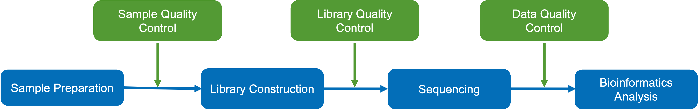
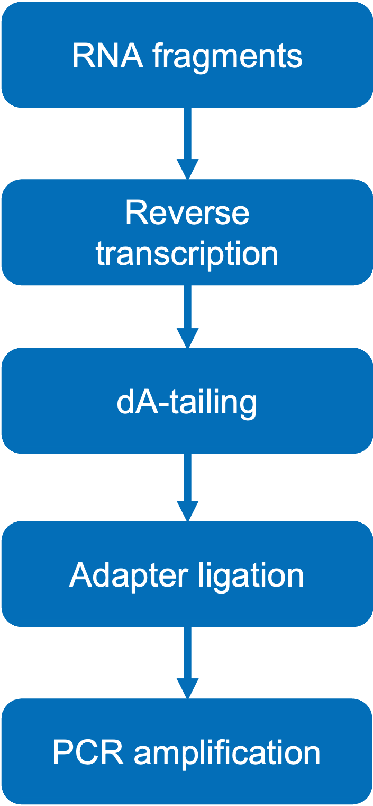
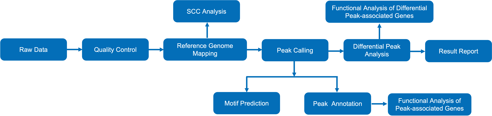
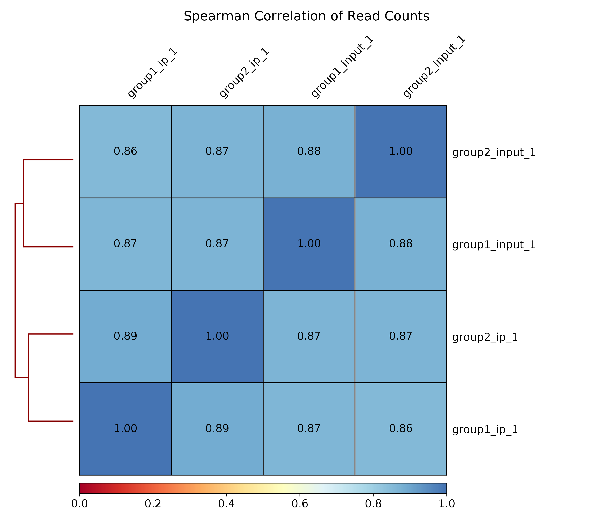
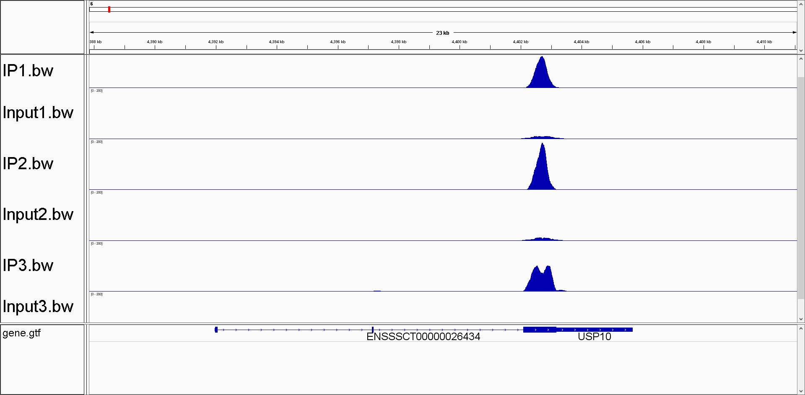

RNA Immunoprecipitation Sequencing Analysis Report
| Contract ID | HXXX |
| Contract Name | RIP-seq analysis |
| Batch ID | XXXXSCXXXXXXXX-Z01-J001 |
| Reference Genome and Version | Mus_musculus |
| Report Time | 2025-08-26 |
| Warm Tips | Partial results are presented in this report, while full results will be delivered in data release. Hyperlink of results in this report will be only valid in data release, after statement confirmation. |
1 Introduction
RIP-Seq (RNA immunoprecipitation sequencing) maps the sites at which proteins are bound to the RNA within RNA-protein complexes in cells. It is based on RIP assay, using specific antibodies to immunoprecipitate RNA-binding proteins or specially modified RNA. The immunoprecipitated RNA is isolated and constructed into library for Illumina sequencing to study RNA regions or species that are specifically bound by specific proteins across the entire transcriptome. The differences can be compared between multiple samples.
At Novogene, we can provide you with high quality sequencing and comprehensive bioinformatics analysis for your IP-Seq project. From RNA samples to final data report, each step of sample QC, library preparation and sequencing may have an impact on the quality and quantity of data output, and the quality of data will directly affect the results of subsequent information analysis. Therefore, obtaining high-quality data is the premise to ensure that bioinformatics analysis is correct, comprehensive and credible. In order to ensure the accuracy and reliability of sequencing data from the beginning, Novogene strictly checks every experimental step and fundamentally ensures the output of high-quality data. The workflow is shown as follows:

Figure 1 Project workflow
2 Library Construction and Sequencing
2.1 Sample Quality Control
Please refer to Novogene’s QC report for methods of sample quality control.
2.2 Library Construction, Quality Control and Sequencing
After sample quality check，the library was ready after RNA fragmentation, reverse transcription, dA-tailing, adapter ligation, and PCR amplification. The experimental procedures of RNA library preparation are shown in Figure 2

Figure 2 Library construction workflow
The library was checked with Qubit and real-time PCR for quantification and bioanalyzer for size distribution detection. Quantified libraries will be pooled and sequenced on Illumina platforms, according to effective library concentration and data amount required
3 Bioinformatics Analysis Pipeline
The bioinformatic analysis workflow of raw sequencing data is as follows:

Figure 3 Bioinformatic analysis workflow
4 Analysis Results
4.1 Data Quality Control
4.1.1 Raw Data
The original raw data from Illumina platform are transformed to Sequenced Reads, known as Raw Data or RAW Reads, by base calling of CASAVA. Raw data are recorded in a FASTQ file, which contains sequencing reads and corresponding sequencing quality. Every read in FASTQ format is stored in four lines, as indicated below:
@HWI-ST1276:71:C1162ACXX:1:1101:1208:2458 1:N:0:CGATGT
NAAGAACACGTTCGGTCACCTCAGCACACTTGTGAATGTCATGGGATCCAT
+
#55???BBBBB?BA@DEEFFCFFHHFFCFFHHHHHHHFAE0ECFFD/AEHH
| Identifier | Meaning |
|---|---|
| HWI-ST1276 | Instrument – unique identifier of the sequencer |
| 71 | Run number – Run number on instrument |
| C1162ACXX | Flowcell ID - ID of flowcell |
| 1 | LaneNumber - positive integer |
| 1101 | TileNumber - positive integer |
| 1208 | X - x coordinate of the spot. Integer which can be negative |
| 2458 | Y - y coordinate of the spot. Integer which can be negative |
| 1 | ReadNumber - 1 for single reads, 1 or 2 for paired ends |
| N | whether it is filtered - NB: Y if the read is filtered out, not in the delivered fastq files, otherwise N |
| 0 | Control number - 0 when none of the control bits are on. Otherwise it is an even number |
| CGATGT | Illumina index sequences |
Line 1 begins with a '@' character and is followed by the Illumina Sequence Identifiers and an optional description.
Line 2 is the raw sequence read.
Line 3 begins with a '+' character and is optionally followed by the same sequence identifiers and descriptions as in Line 1.
Line 4 encodes the quality values for the sequence in Line 2 and must contain the same number of characters as the bases in the sequence.
Sequencing process itself has the possibility of machine errors. Sequencing error rate distribution can reflect the quality of sequencing data. The quality value of each base in sequence information is stored in the FASTQ file. Quality value of the read represented by Qphred and the “e” represents the sequence error rate, Qphred=-10log10(e). The relationship between sequencing error rate (e) and sequencing base quality value (Qphred) is as following(Base Quality and Phred score relationship with the Illumina CASAVA v1.8 software).
| Phred Score | Error Rate | Correct Rate | Q-score |
|---|---|---|---|
| 10 | 1/10 | 90% | Q10 |
| 20 | 1/100 | 99% | Q20 |
| 30 | 1/1000 | 99.9% | Q30 |
| 40 | 1/10000 | 99.99% | Q40 |
(1) Due to the gradual consumption of reagents during sequencing, the sequencing error rate increases with the length of read, which is a common feature of the Illumina high-throughput sequencing platform (Erlich et al., 2008; Jiang et al., 2011.).
(2) The first six bases have a relatively high error rate due to the incomplete binding of random hexamers used in priming cDNA synthesis. In general, a single base error rate should be lower than 1%.
4.1.2 FastQC of Raw_reads
As the high-throughput sequencing technology getting mature, we can obtain a mass amount of data easily. The key is how to extract the information that we need from the data. The first step is to check the raw data quality before doing follow-up data analysis. The popular tool for the quality control is software FastQC (Andrews S., 2010). Summary of the raw data quality control is in the following:
Figure 4.1 Raw reads of FastQC
4.1.3 Raw Data Trimming
For the raw data which pass the quality control, primer mismatch may result in nucleotidic composition bias at first several positions of the reads, which could lead to wrong bases insertion during sequencing. Because of the small fragment size of IP-Seq, there are often some adapter-appended reads. Trimming off the adapter sequences and low-quality bases is necessary.
The procedure for data trimming is in the following:
(1) Discard the reads with low quality (proportion of low quality bases larger than 50%);
(2) Discard the reads with N ratio (unsure base) larger than 15%;
(3) Discard the reads with adaptor at the 5’-end;
(4) Discard the reads without adaptor and inserted fragment at the 3’-end;
(5) Trim the adapter sequence at the 3’-end;
(6) Discard the reads whose length are less than 50nt after trimming.
Table 4.1 Summary of raw data quality control
| Sample | Raw_reads | Raw_bases(G) | Clean_reads | Clean_bases(G) | Clean_ratio | GC_content | Q20_raw | Q30_raw | Q20_clean | Q30_clean | Low_quality | Too_many_N | Too_short | Trimmed_with_adapter |
|---|---|---|---|---|---|---|---|---|---|---|---|---|---|---|
| group1_input_1 | 21006106 | 6.30 | 20014195 | 4.82 | 76.51% | 57.16% | 96.63% | 92.59% | 98.98% | 97.24% | 299548 | 13934 | 1670340 | 27326780 |
| group1_ip_1 | 24942405 | 7.48 | 24202478 | 5.44 | 72.73% | 52.18% | 96.50% | 92.55% | 99.16% | 97.63% | 215974 | 14230 | 1249650 | 37941538 |
| group2_input_1 | 23290142 | 6.99 | 22149989 | 5.40 | 77.25% | 55.89% | 97.06% | 93.42% | 99.02% | 97.36% | 320058 | 15944 | 1944304 | 29306130 |
| group2_ip_1 | 23596595 | 7.08 | 23092557 | 5.29 | 74.72% | 51.06% | 96.68% | 92.94% | 99.15% | 97.62% | 194146 | 14326 | 799604 | 34737596 |
-
(1) Sample: sample name;
(2) Raw_reads: the read pair counts of raw data;
(3) Raw_bases(G): read counts of raw data multiplied by read length, saved in G unit;
(4) Clean_reads: the read pair counts after trimming filtering;
(5) Clean_bases(G): clean read counts multiplied by read length, saved in G unit;
(6) Clean_ratio: the proportion of clean bases in raw bases;
(7) GC_content: the proportion of G and C in all the bases;
(8) Q20_raw: the proportion of bases with quality score more than 20 of raw data;
(9) Q30_raw: the proportion of bases with quality score more than 30 of raw data;
(10) Q20_clean: the proportion of bases with quality score more than 20 of clean data;
(11) Q30_clean: the proportion of bases with quality score more than 30 of clean data;
(12) Low quality: The number of filtered read pair and their proportion to the total raw read pair due to low quality; (13) Too_Many_N: The number of filtered read pair and their proportion to the total raw read pair due to N content exceeding 10%; (14) Too_Short: The proportion of raw read pair with a length shorter than 50bp after trimming; (15) Trimmed_With_Adapter: The proportion of raw read pair with a length shorter than 50bp, after trimming and removing adapter;
4.1.4 FastQC of Clean_reads
Quality control of the clean reads after trimming is in the following:
Figure 4.2 FastQC of Clean_reads
-
(1) Top-left: horizontal axis represents position in read (bp), vertical axis represents quality scores, different colors represent different quality range.
(2) Top-middle: horizontal axis represents position in read (bp), vertical axis represents base percentage.
(3) Top-right: the distribution of read length.
(4) Bottom-left: mean GC content (%). Red line is the actual GC content distribution, blue line is the theoretical distribution.
(5) Bottom-middle: N-ratio across all bases.
(6) Bottom-right: x-axis is the sequence duplication level. y-axis is the percent of the deduplicated reads.
4.2 Mapping
4.2.1 Summary of mapping
The common tools for mapping are Bowtie, BWA, MAQ, TopHat, etc. We choose proper softwares and parameters according to different genome characters to do the genome mapping analysis for the filtered reads. Considering the small fragment size of IP-Seq, and the percentage of the unique sequence in the total sequence is the most important information, thus, we can map the reads to the reference genome using BWA much more accurately (Li et al., 2009). The summary of mapping is in the following table:
Table 4.2 Summary of mapping
| Sample | Reads | Clean_reads | rRNA | Non-rRNA | Mapped | Unique_mapped | Dup_Unique_mapped |
|---|---|---|---|---|---|---|---|
| group1_ip_1 | pair | 24202478 | 1601274(6.62%) | 22601204 | 21685070(95.95%) | 15316158(70.63%) | 5426420(35.43%) |
| group1_ip_1 | read1 | 24202478 | 1601274(6.62%) | 22601204 | 22175750(98.12%) | 15723590(70.90%) | 5481342(34.86%) |
| group1_ip_1 | read2 | 24202478 | 1601274(6.62%) | 22601204 | 22178567(98.13%) | 15724008(70.90%) | 5482961(34.87%) |
| group1_input_1 | pair | 20014195 | 4110322(20.54%) | 15903873 | 15030948(94.51%) | 10379298(69.05%) | 3186903(30.70%) |
| group1_input_1 | read1 | 20014195 | 4110322(20.54%) | 15903873 | 15625722(98.25%) | 10882079(69.64%) | 3263711(29.99%) |
| group1_input_1 | read2 | 20014195 | 4110322(20.54%) | 15903873 | 15632365(98.29%) | 10883917(69.62%) | 3266405(30.01%) |
| group2_input_1 | pair | 22149989 | 3972016(17.93%) | 18177973 | 17215072(94.70%) | 12036121(69.92%) | 3903827(32.43%) |
| group2_input_1 | read1 | 22149989 | 3972016(17.93%) | 18177973 | 17895201(98.44%) | 12639323(70.63%) | 4007776(31.71%) |
| group2_input_1 | read2 | 22149989 | 3972016(17.93%) | 18177973 | 17903725(98.49%) | 12640107(70.60%) | 4009302(31.72%) |
| group2_ip_1 | pair | 23092557 | 1144204(4.95%) | 21948353 | 21110263(96.18%) | 14879119(70.48%) | 5238544(35.21%) |
| group2_ip_1 | read1 | 23092557 | 1144204(4.95%) | 21948353 | 21630149(98.55%) | 15319253(70.82%) | 5299550(34.59%) |
| group2_ip_1 | read2 | 23092557 | 1144204(4.95%) | 21948353 | 21631490(98.56%) | 15319181(70.82%) | 5300117(34.60%) |
-
(1) rRNA: the ratio of rRNA read pair
(2) Non-rRNA: numbers of non-rRNA reads
(3) Unique_mapped: read pair with MAPQ (Li et al., 2008) no lower than 13; can be interpreted as the chance of non-accurate mapping (same score for the random mapping) is 0.05.
(4) Duplicates: the read pair mapped to the exact same position of the genome;
(5) Mapped is relatively to Clean read pair;
(6) Unique_mapped is relatively to Mapped;
(7) Dup_Unique_mapped is relatively to Unique_mapped.
4.2.2 MAPQ
The most important thing during IP-Seq analysis is the percentage of the unique sequence in the total sequence number. Duplicates were labeled using SAMBLAST (Faust et al., 2014) and mapping quality value was calculated (MAPQ). Proper quality value was chosen as the only threshold for mapping. Here we choose 13 as the threshold, which means that the mapping chance of the accordingly non-unique region is only 0.05. Only keep one reads for the duplicates in the followed peak calling.
Figure 4.3 Distribution of MAPQ
Horizontal axis is MAPQ, vertical axis is the reads count.
4.2.3 Genome-wide distribution of the mapped reads
Summary of the density of total mapped reads in different chromosomes (plus and minus) is shown in the followed figure. With 5k slide window size, the medium of the number of reads mapped to each base within window is calculated, and converted to log2. The longer the whole chromosome is, the more reads are mapped (Marquez et al. 2012). From the correlation of the number of the mapped reads and the length of the chromosome in the figure, we can see the correlation of the total number of the reads and the length of the chromosome much easier.
Figure 4.4 Genomewide distribution of the mapped reads
Horizontal axis represents the postition of the chromosome, vertical axis represents the number of the reads mapped to 1000nt window size. Here is the unique mapping and deduplication results.
4.2.4 Distribution of the reads mapped to the gene
Since the binding sites of transcription factor and histone protein are important for gene regulation, analysis of relative mapping position distribution can help us predict the protein function. Each gene and its 2kb upstream and 2kb downstream are divided into 100 equal parts. Reads density are calculated in each part by the mapped reads and the ratio of the reads to total reads.
Figure 4.5 Distribution of the reads mapped to gene
Horizontal axis: relative position of the gene. Vertical axis：reads density.
4.2.5 Sample correlation detection
Biological replicate mainly has two applications: One is to prove that the biological experiment can be replicated and there is no large variance. The other one is to make sure that following differential gene analysis can get reliable results. The correlation among samples is an important index to see whether the experiment design is reliable and whether the sampling is right. The correlation coefficient is much closer to 1, the similarity of the expression pattern among samples is much higher.

Figure 4.6 Spearman test among samples
Heat-map of sample correlation test, correlation coefficient among samples (Spearman correlation coefficient). The darkness of the color represents how large is the correlation coefficient.
4.2.6 Visualization of pileup signal
We provide the visualization results of genome wide reads mapping in bam format. IGV (Integrative Genomics Viewer) browser is recommended to view the bam file (Nicol et al., 2009, Thorvaldsdóttir et al., 2013). IGV browser has the following characters: (1) can reveal single or multiple mapping positions in the genome in different scales, including the distribution of the reads in different chromosomes, and the distribution of annotated exons, introns, splicing junctions and inter-gene region; (2) can reveal reads abundance in different region under different scales; (3) can reveal the annotation information of the gene and alternative splicing isoforms; (4) can reveal other annotation information; (5) can download annotation information from remote and local server. Please check the IGV manual for detail instruction (IGVQuickStart.pdf). The BAM file, BigWig file can be visualized in IGV browser (Kent et al., 2010).

Figure 4.7 Visualization of pileup signal by IGV(demo)
Result: Mapping
4.3 Fragment size prediction
4.3.1 Summary of fragment size
For a specific binding site, there is a significant reads enrichment in the binding site. For single-end sequencing, we use MACS2 software to predict the frag_sizes of IP experiment. The whole genome is scaned using certain window size and the enrichment level of the reads in each window is calculated. Then proper windows (eg.1000) is extracted as the samples to build the enrichment model to predict the length of frag_sizes. For double-end sequencing, we use RSeQC software to predict the frag_sizes for the mapping results. The predicted frag_sizes are used for later peak calling.
Table 4.3 Summary of Fragment size
| Sample | frag_sizes_length | infor |
|---|---|---|
| group1_input_1 | 156 | Calculated_with_RseQC |
| group1_ip_1 | 139 | Calculated_with_RseQC |
| group2_input_1 | 158 | Calculated_with_RseQC |
| group2_ip_1 | 143 | Calculated_with_RseQC |
-
(1) Sample: sample name
(2) frag_sizes_length: frag_sizes length
(3) infor: default parameter
4.3.2 K distribution of fragment size
Length distribution is analyzed by kernel density method and shown below:
Figure 4.8 frag_size distribution Figure
Double end: horizontal axis is the length of the predicted length of frag_sizes, vertical axis is the value of kernel density.
4.4 Peak Calling
The annotation of transcription factor binding sites, histone binding sites is the important information for understanding the regulation mechanism and function. By mapping to the reference genome we can obtain the information of protein-RNA binding sites directly. By making use of MACS2 software (Zhang et al., 2008) (threshold q value = 0.05) to finish the peak calling, we can calculate the number of peaks, the peak width and its distribution, and find the peak related genes.
4.4.1 Summary of peak calling
Table 4.4 Summary of peak calling
| Experiment | IP | Input/Mock | Fragment_length | Count_of_narrow_peak | FRiP | Count_of_summits |
|---|---|---|---|---|---|---|
| group1_1 | group1_ip_1 | group1_input_1 | 139(preset) | 5669 | 45.2758% | 7984 |
| group2_1 | group2_ip_1 | group2_input_1 | 143(preset) | 6032 | 45.4860% | 8752 |
-
(1) Experiment: experimental group name(one RIP Experiment includes an IP and a control, eg. Input or Mock or no control);
(2) IP:experiment name after rip handling;
(3) Input/Mock: control group;
(4) Fragment_length: frag sizes length
(5) Count_of peak: the number of peak (narrow). If would like to test broad peak, need annotate in the information collection form;
(6) FRiP: the ratio of the numer of the reads in the peak to the total reads, which can test the effect of IP experiment;
(7) Count_of_summits: number of summits. Some peaks can have multiple summits due to close position.
4.4.2 Genome wide distribution of peaks
The summary of genome wide distribution of peaks is shown in the figure below. From the number of the peaks mapping to the chromosome and its distribution can reflect the distribution of the protein binding sites. When the number of the chromosomes with peaks is larger than 30, only 15 chromosomes are shown.
Figure 4.9 Genome wide distribution of peaks
Horizontal axis is the coordinate of the peaks in the chromosome. Vertical is the chromosomes. Every blue bar represents a peak.
4.4.3 Distribution of peak width
The peak width represents the length of the RNA that is bound by the studied protein. The number of peaks of different peak width is calculated, as shown below.
Figure 4.10 Distribution of peak width
Horizontal axis is the width of the peak (nt), vertical axis is the number of the corresponding peaks.
4.4.4 Distribution of fold enrichment
The fold enrichment value is the digital display of the peak signal during peak calling, which can be called signal value. The larger the value, the more reads are enriched to this peak. The peak number of different fold changes is calculated. The distribution of fold enrichment is shown below:
Figure 4.11 Distribution of fold enrichment
Horizontal axis represents the enrichment fold change of the peak. Vertical axis represents the number of the peaks.
4.4.5 Distribution of q values
The significance of the peak is the indication of the credibility of the peak, so the q value for eah peak is calculated. The peak number of differnet q values is calculated and the distribution is shown below:
Figure 4.12 Distribution of q values
Horizontal axis represents -log10 q value of the peak; Vertical axis represents the number of the peaks.
4.4.6 Count of summits in peaks
The number of summits in each peak is analysized, which infers the peak type in the IP experiment.
Figure 4.13 Count of summits in peaks
Horizontal axis represents the number of summit in each peak. Vertical axis is the corresponding number of the peak.
4.4.7 Summits distribution
Each peak is divided to 100bp windows and the summits in each window of all the peaks are counted as shown below:
Figure 4.14 Percentile position of summits in peaks
Horizontal axis is the position of sumits, vertical axis is the count of the summits.
Result: Peak
4.5 Motif analysis
Motif represents the sequence conservation of the peak location, which may play a role in gene expression regulation. The following is a display of motifs on the mRNA regions associated with peak binding identified using Homer software.
4.5.1 Motif searching
Figure 4.15 Motif sequence
Identify the 25 most significant motifs with lengths of 6, 8, 10, and 12 for each experiment group. For detailed information about each motif, please refer to the result file and readme file.
4.6 Peak annotation
4.6.1 Peak summits distribution in mRNA
Figure 4.16 Distribution of relative gene positions at the peak summits
Calculate the distribution of peaks summits in mRNA.
4.6.2 Distribution of peaks in functional regions
The figure below shows the distribution of peaks in different functional regions.
Figure 4.17 Peak distribution in functional gene region
Distribution of peak in different functional area. Horizontal axis represents different functional area, vertical axis represents the ratio of the peak in the functional region to the total peaks. The number on the top of the functional region represents peak number.
U2000 means 2000bp in the upstream region, D2000 means 2000bp in the downstream region;
CDSu2K and CDSd2K means upstream and downstream 2kb of CDS;
TSS100, Stop100, start100 means 100bp centered with TSS,TTS, Start-codon and stop-codon.
4.6.3 Peak distribution on the transcriptome functional region
Figure 4.18 Peak distribution on the transcriptome functional region
The figure shows the distribution of peak in five transcriptional functional regions (CDS, 5'UTR, 3'UTR, TSS region, and stop cone region).
4.6.4 Distribution and significance of peaks on the transcriptome functional region
Figure 4.19 Distribution and significance of peaks on the transcriptome functional region
The distribution bar chart of peak in four transcriptional functional regions (5'UTR, 3'UTR, CDS, and Intronic) is shown in the figure, with gray indicating the expected value. Fisher's exact test，0.01 < pvalue < 0.05（*）; 0.001 < pvalue < 0.01（**）; pvalue < 0.001（***）。
4.6.5 GO enrichment analysis
Gene Ontology (GO, http://www.geneontology.org/) is international standard classification system for gene function attributes(Ashburner et al., 2000). As the database built by Gene Ontology Consortium, it aims to build up an updating language vocabulary standard to describe gene and protein function for all species(Young et al., 2010). GO covers three domains: Molecular Function, Biological Process and Cellular Component.
Gene or protein can find the corresponding GO accession number by ID access or sequence annotation. And every GO number can find its corresponding Term, which is the function classification or cellular localization.
Any gene whose position is overlapped with peak is peak related gene. Results of GO enrichment is in the following:
Table 4.7 peak related gene GO enrichment
| GO | Description | Term_type | Overrepresented_pValue | Corrected_pValue | Gene_item | Gene_list | Bg_item | Bg_list | genes |
|---|---|---|---|---|---|---|---|---|---|
| GO:0043231 | intracellular membrane-bounded organelle | cellular_component | 7.3211e-44 | 8.3443e-40 | 1171 | 1618 | 13741 | 24625 | |
| GO:0005622 | intracellular anatomical structure | cellular_component | 2.1091e-42 | 1.2019e-38 | 1404 | 1618 | 17395 | 24625 | |
| GO:0044424 | obsolete intracellular part | cellular_component | 2.1091e-42 | 1.2019e-38 | 1404 | 1618 | 17395 | 24625 | |
| GO:0043227 | membrane-bounded organelle | cellular_component | 3.7981e-42 | 1.7315e-38 | 1219 | 1618 | 14464 | 24625 | |
| GO:0043231 | intracellular membrane-bounded organelle | cellular_component | 9.7142e-46 | 2.2144e-41 | 1197 | 1643 | 13741 | 24625 | |
| GO:0043229 | intracellular organelle | cellular_component | 2.1103e-44 | 2.4052e-40 | 1327 | 1643 | 15713 | 24625 |
-
(1) GO_accession: the unique GO ID;
(2) Description: Function description;
(3) Term_type: Including cellular_component, biological_process and molecular_function;
(4) Over_represented_pValue: significance of enrichment analysis;
(5) Corrected_pValue: P-Value after correction, normally, with padj< 0.05 are enriched;
(6) Gene_with_peak_item: the number of peak related genes with this GO term;
(7) Gene_with_peak_list: the number of peak related gene;
(8) Bg_item: the number of background gene with this GO term;
(9) Bg_list: the number of background genes;
(10) Genes: Annotated peak related gene ID (not show in this table);
(11) Choose the first five results for each experiment.
4.6.6 GO enrichment
Peak overlapping gene GO enrichment bar, which directly reflect the distribution of the number of the peak overlapping genes enrichment on the biological process, cellular component and molecular function.
Figure 4.20 GO enrichment
Bar: horizontal axis is the number of the peak overlapping gene. Different color is used to differentiate biological process, cellular component and molecular function.
DAG figure: every note represents a GO project. Rectangular represents top 10 enrichment GO. Darkness represents the enrichment level. The darker of the color, the higher of the enrichment.
The name of the project and the significance (padj) are shown in every note.
4.6.7 KEGG enrichment analysis
Different genes coordinate with each other to generate the function inside the organism. Pathway enrichment can help identify the main biochemical metabolic pathway and signalling pathway of differentially expressed genes. KEGG (Kyoto Encyclopedia of Genes and Genomes) is a database that can analyze gene function and genome information. It helps researchers study the genes and their expression as a whole network. As the main public database related to pathways (Kanehisa,2008), KEGG provides an excellent pathway search, including the metabolism of carbohydrates, nucleotides, amino acids, and biodegradation. These pathways not only provide the possible metabolism pathway but give a comprehensive annotation of the enzyme in each catalytic reaction, including amino acid sequence, PDB link, etc. It is a powerful tool to study organism metabolism and do network analysis. Pathway enrichment makes use of pathways in the KEGG database as the unit, with hypergeometric tests to find the significantly enriched pathway in the differentially expressed genes with the whole genome as the background.
Table 4.8 KEGG enrichment list
| Term | Database | ID | Input number | Background number | P-Value | Corrected P-Value | Input | Hyperlink |
|---|---|---|---|---|---|---|---|---|
| Pathways in cancer | KEGG PATHWAY | mmu05200 | 84 | 535 | 6.75546889552e-20 | 9.96431662089e-18 | ||
| Chronic myeloid leukemia | KEGG PATHWAY | mmu05220 | 33 | 76 | 4.84080390082e-19 | 4.71866238437e-17 | ||
| Endocytosis | KEGG PATHWAY | mmu04144 | 57 | 270 | 6.39818628389e-19 | 4.71866238437e-17 | ||
| Regulation of actin cytoskeleton | KEGG PATHWAY | mmu04810 | 49 | 217 | 1.78551318868e-17 | 1.05345278132e-15 | ||
| Regulation of actin cytoskeleton | KEGG PATHWAY | mmu04810 | 53 | 217 | 8.70233964028e-20 | 2.54108317496e-17 | ||
| MAPK signaling pathway | KEGG PATHWAY | mmu04010 | 60 | 294 | 6.47137640728e-19 | 9.44820955463e-17 |
-
(1) Term: Description information of KEGG pathway.
(2) Database: KEGG PATHWAY.
(3) ID: The only pathway identifier in the KEGG database.
(4) Input number: the number of peak overlapping gene in the corresponding pathway.
(5) Background number: The number of the genes in the corresponding pathway.
(6) P-value: statistical significant level of enrichment analysis.
(7) Corrected p-value: statistical significant level after correction. Normally, if the corrected P-value < 0.05 this pathway is enriched.
(8) Input: The peak overlapping genes in the corresponding pathway. Because of too much genes, here we ignore it.
(9) Hyperlink: see result file.
4.6.8 Scatterplot of KEGG enrichment
Peak overlapping gene KEGG enrichment scatter (Figure 4.21) is the visualization of KEGG enrichment analysis. In this figure, the extent of KEGG enrichment is measured by Rich factor, q value and the number of the genes that are enriched in this pathway. Rich factor is the ratio of the number of the genes in the corresponding pathway of the peak overlapping gene to the total number of all annotated genes in this pathway. Q value is the p value after multiple hypothesis testing correction. The range of q value is from 0 to 1, with more close to 0, representing more significant for the enrichment. Here only shows the top 20 significant enriched pathways. If the enriched pathways are less than 20, then all of them are shown.
Figure 4.21 KEGG enrichment scatter
Vertical axis represents pathway name, horizontal axis represents Rich factor, the size of the dot represents the numbers of the overlapping peak genes in the pathway, and the color of the dots corresponds to different qvalue range. The size of the dots represents the number of the genes whose peaks are overlapping in this pathway.
4.7 Differential analysis
Only when the number of groups is not less than two can the difference analysis be performed between groups.
FoldEnrich is used for differential analysis of peaks in different experimental groups (the ratio of RPM value in group A to group B). Differerntial binding sites are analyzed in different groups by finding differential peak when the ratio of FoldEnrich is larger than 2. We can get the differential binding sites related genes to do the follow-up annotation and enrichment analysis.
4.7.1 Summary of differential peaks
The Differential Expression Venn diagram illustrates the differential peaks of the compared groups. The sum of all the numbers in the circle represents the total number in the compared groups, and the overlapping part is the common peak number between two compared groups., as shown in the figure below.
Figure 4.22 Venn diagram of differential peak in comparable groups
Different colors represent different compared groups (A or B). The sum of the number in the pie is the peak number in this compared group, and the overlapping part is the number of common genes among comparison groups.
Figure 4.23 Venn diagram of differential peak in comparable gruops
Since some compared groups (eg. A or B) may include multiple experimental groups (eg. A1, A2, A3), here show the number of peak among experimental groups within one compared group (eg. A1&A2, A1&A3). Different colors represent different experimental groups (A1 or A2). The sum of the number in the pie is the peak number of this experimental group. Single color is group specific peak number. Overlapping part is the common peak number between two experimental groups.
4.7.2 Enrichment level analysis among different samples
RPM value of the peak in different samples (the ratio of 1M reads that enriched to the peak in a single sample) is used to do clustering analysis to determine the enrichment pattern of the same peak in different samples or the enrichment difference of different peaks in the same sample. At the same time, Enrichment comparison between IP and Input in the group can show the peak enrichment in IP experiment. Hierarchical clustering is done based on RPM value in different samples. Different colors represent different clustering information. The more close between the IP sample enrichment, the more similar function or biological process they have.
Figure 4.24 Enrichment analysis among samples
Top is the clustering among different samples in comparable groups.
Bottom is the correlation among different samples in comparable groups.
4.7.3 Reads density distribution among comparable groups for the annotated peaks
RPM is the number of reads enriched in peak area per million reads. Boxplot is used to show reads enrichment in the annotated peak area in different samples.
Figure 4.25 Boxplot of RPM value among samples in different groups
4.7.4 Enrichment level of different experimental peak analysis
FoldEnrich value (the Ratio of RPM value in IP to RPM in input) is used to do the cluster analysis of the peaks from different experimental group. It is used to determine the enrichment pattern of the same peak in different experimental groups, or the enrichment difference of different peaks in the same experimental group. At the same time, according to the comparison of peak enrichment among different experimental groups, we can show the different enrichment of peak between experimental groups, so as to find the different enrichment peak, which is the differential protein binding sites. Hierarchical clustering analysis is done based on the FoldEnrich value from different experimental groups. Different colors represent different clustering information.
Figure 4.26 Peak enrichment analysis among different experimental groups
Top is the clustering analysis of peaks from different experimental groups.
Bottom is the correlation among different experimental groups.
4.7.5 Reads density distribution among different experimental groups for the annotated peaks
Boxplot is used to show the different FoldEnrich (the ratio of RPM of IP to RPM of Input) i in the peak annotation region in different samples.
Figure 4.27 Reads density distribution in peak annotation region from different experiment was shown by boxplot.
4.7.6 GO enrichment analysis of differential peak related genes
GO enrichment analysis for the differential peak related genes is shown below:

Figure 4.28 GO enrichment analysis for the differential peak genes
4.7.7 KEGG enrichment analysis of differential peak related genes
KEGG enrichment analysis for the differential peak related genes is shown below:
Figure 4.29 KEGG enrichment analysis for differential peak genes
Result: Compare
5 Appendix
5.1 Software
| Analysis | Software | Verison | Parameters | Remarks |
|---|---|---|---|---|
| Trimming | fastp | 0.23.1 | length_required=50;n_base_limit=6; | - |
| QC | fastqc | v0.11.9 | - | - |
| Mapping | BWA | 0.7.12-r1039 | mem -k 19 -T 30 -t 3 -M | - |
| Peak calling | MACS2 | 2.2.7.1 | -q 0.05 --nomodel --extsize --call-summits | - |
| Motif prediction | homer findMotifsGenome.pl | 4.11 | -gc;-len 6,8,10,12 | - |
| Peak annotation | PeakAnnotator_Cpp | 1.4 | TSS peaks.bed / NDG peaks.bed | - |
| GO enrichment | goseq | 1.38.0 | corrected pvalue<0.05 | - |
| KEGG enrichment | KOBAS | 3.0 | corrected pvalue<0.05 | - |
5.2 Result File Decompression Method and Format Description
| Compressed File Format | Operating System | File Decompression |
|---|---|---|
| *.gz | Unix/Linux/Mac | Command line: gzip –d *.gz |
| Windows | Software: such as WinRAR, 7-Zip et al. | |
| *.zip | Unix/Linux/Mac | Command line: unzip *.zip |
| Windows | Software: such as WinRAR, 7-Zip et al. |
| File Type | File Description | Way to Open |
|---|---|---|
| file.fa | Fasta format is a text-based format for representing sequences | Unix/Linux/Mac user use less or more command |
| Windows user use editor Editplus/Notepad++ et al. | ||
| file.gtf | GFF/GTF is general feature format. | Unix/Linux/Mac user use less or more command |
| Windows user use editor Editplus/Notepad++ et al. | ||
| file.fq | Text file that contains sequence data delivered from a sequencer | Unix/Linux/Mac user use less or more command |
| Windows user use editor Editplus/Notepad++ et al. | ||
| file.bw | BigWig file. Indexed binary format which is useful for dense, continuous data that will be dispalyed in the Genome Browser as a graph. | It can be visualized with the IGV observation or upload to UCSC browser. |
| file.bam | BAM is compressed format for SAM file which contains sequence alignment information. | Unix/Linux/Mac user use samtools software. |
| file.bam.bai | Index file for bam | No need to open, put it in the same directory with bam file when manipulate bam. |
6 References
Andrews S. (2010). FastQC: a quality control tool for high throughput sequence data. Available online at: http://www.bioinformatics.babraham.ac.uk/projects/fastqc
Ashburner M, Ball CA, Blake JA, et al. Gene ontology: tool for the unification of biology. The Gene Ontology Consortium. Nat Genet. 2000;25(1):25-29. doi:10.1038/75556
Bailey TL, Williams N, Misleh C, Li WW. MEME: discovering and analyzing DNA and protein sequence motifs. Nucleic Acids Res. 2006;34(Web Server issue):W369-W373. doi:10.1093/nar/gkl198
Bailey TL, Elkan C. Fitting a mixture model by expectation maximization to discover motifs in biopolymers. Proc Int Conf Intell Syst Mol Biol. 1994;2:28-36.
Bailey TL. DREME: motif discovery in transcription factor ChIP-seq data. Bioinformatics. 2011;27(12):1653-1659. doi:10.1093/bioinformatics/btr261
Erlich Y, Mitra P P, Delabastide M, et al. Alta-Cyclic: a self-optimizing base caller for next-generation sequencing[J]. Nature methods, 2008, 5(8): 679-682.
Faust GG, Hall IM. SAMBLASTER: fast duplicate marking and structural variant read extraction. Bioinformatics. 2014;30(17):2503-2505. doi:10.1093/bioinformatics/btu314
Gupta S, Stamatoyannopoulos JA, Bailey TL, Noble WS. Quantifying similarity between motifs. Genome Biol. 2007;8(2):R24. doi:10.1186/gb-2007-8-2-r24
Jiang L, Schlesinger F, Davis C A, et al. Synthetic spike-in standards for RNA-seq experiments[J]. Genome research, 2011, 21(9): 1543-1551.
Kanehisa M, Goto S. KEGG: kyoto encyclopedia of genes and genomes. Nucleic Acids Res. 2000;28(1):27-30. doi:10.1093/nar/28.1.27
Kanehisa M, Araki M, Goto S, et al. KEGG for linking genomes to life and the environment. Nucleic Acids Res. 2008;36(Database issue):D480-D484. doi:10.1093/nar/gkm882
Kent WJ, Zweig AS, Barber G, Hinrichs AS, Karolchik D. BigWig and BigBed: enabling browsing of large distributed datasets. Bioinformatics. 2010;26(17):2204-2207. doi:10.1093/bioinformatics/btq351
Li H, Durbin R. Fast and accurate short read alignment with Burrows-Wheeler transform. Bioinformatics. 2009;25(14):1754-1760. doi:10.1093/bioinformatics/btp324
Li H, Ruan J, Durbin R. Mapping short DNA sequencing reads and calling variants using mapping quality scores. Genome Res. 2008;18(11):1851-1858. doi:10.1101/gr.078212.108
Nicol JW, Helt GA, Blanchard SG Jr, Raja A, Loraine AE. The Integrated Genome Browser: free software for distribution and exploration of genome-scale datasets. Bioinformatics. 2009;25(20):2730-2731. doi:10.1093/bioinformatics/btp472
Salmon-Divon M, Dvinge H, Tammoja K, Bertone P. PeakAnalyzer: genome-wide annotation of chromatin binding and modification loci. BMC Bioinformatics. 2010;11:415. Published 2010 Aug 6. doi:10.1186/1471-2105-11-415
Thorvaldsdóttir H, Robinson JT, Mesirov JP. Integrative Genomics Viewer (IGV): high-performance genomics data visualization and exploration. Brief Bioinform. 2013;14(2):178-192. doi:10.1093/bib/bbs017
Young MD, Wakefield MJ, Smyth GK, Oshlack A. Gene ontology analysis for RNA-seq: accounting for selection bias. Genome Biol. 2010;11(2):R14. doi:10.1186/gb-2010-11-2-r14
Zhang Y, Liu T, Meyer CA, et al. Model-based analysis of ChIP-Seq (MACS). Genome Biol. 2008;9(9):R137. doi:10.1186/gb-2008-9-9-r137
(1) Top-left: horizontal axis represents position in read (bp), vertical axis represents quality scores. Different colors represent different quality range; (2) Top-middle: horizontal axis represents position in read (bp), vertical axis represents base percentage; (3) Top-right: the distribution of read length; (4) Bottom-left: GC distribution over all sequences. Red line is the actual GC content distribution, blue line is the theoretical distribution; (5) Bottom-middle: N-ratio across all bases; (6) Bottom-right: x-axis is the sequence duplication level. y-axis is the percent of the deduplicated reads.